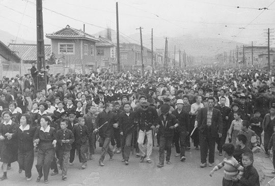
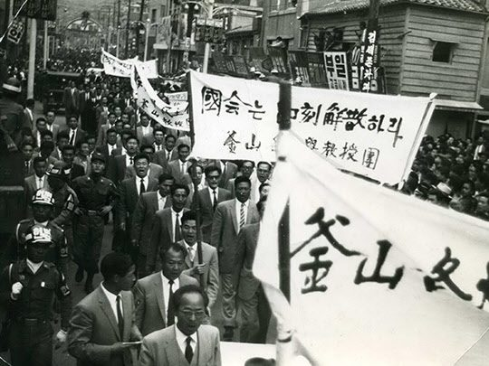
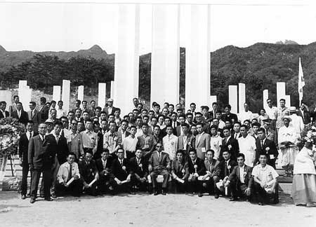
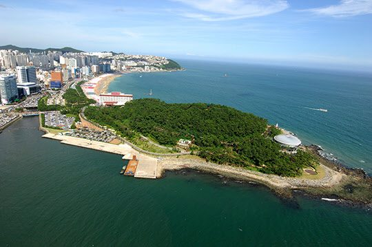

보도일 2014-08-11출처 조선일보 프리미엄조선 연재
부하들 데리고 부산 관사로 '2차' 가던 박정희
육영수가 내려와 있자 '비상상황'이라며 해산
부산군수기지사령부 관사는 동래 온천장 동네였다. 이른 봄날에 박정희는 술집의 일차를 마치면 얼큰한 술기운 속에서 곧잘 자기 관사로 참모들을 몰고 갔다. 대화도 노래도 참으로 편한 장소였다. 관사로 가자, 나를 따르라. 이렇게 취중 호기를 부리던 박정희가 갑자기 꼬리를 내리는 경우도 없지 않았다.
비상 발생, 이것이었다. 비상? 부대의 비상이 아니었다. 가정의 비상이었다. 술기운을 즐기며 사령관을 모시고 관사로 몰려가는 일행이 문득 발길을 멈추는 경우는 서울에 있어야 할 ‘사모님(육영수)’이 내려와서 관사에 불을 밝히고 기다리는 밤이었다. 삐삐도 휴대폰도 없던 시절, 사랑하는 아내가 새봄의 꽃소식처럼 내려와서 기다리는 밤, 박정희는 취중에도 참모들에게 화들짝 비상을 걸었다. 말은 늘 똑같았다.
“오늘밤은 안 되겠다. 비상이야 비상. 해산!”
술을 마시며 울분을 삭이고 거사의 밑그림을 그려 나가는 부산 시절의 박정희는 여야 정치인들의 청탁 처리에 대해 원칙을 지켰다. 합리적인 것이면 야당 의원이라도 들어주고 무리한 것은 여당 의원이라도 묵살했다. 자유당 실세 의원의 친척이 관련된 군내 부정사건도 철저히 수사하게 했다. 그 의원이 항의하러 사령관실로 찾아오자 몇 시간이고 기다리게 해놓고는 끝내 만나주지도 않았다. 박정희의 원칙은 박태준의 성정에도 딱 맞는 것이었다. 그러한 원칙에 대해 박태준은 ‘강직성, 합리성, 유연성을 겸비한 원칙’이라고 회고했다.
술자리에서는 ‘사람 좋은 낭만적인’ 사령관, 공적 업무 처리에서는 빳빳이 원칙을 지키고 현장 확인과 대민(對民) 화합을 중시하는 리더, 가슴과 머리에는 거대한 꿈을 품은 몽상가. 이것이 1960년 봄날에 박태준이 직접 체험하며 확인한 박정희라는 인간이었다. 그때 자신의 내면에 새겨졌던 박정희에 대해 그는 노년의 어느 날 이렇게 털어놓는다.
“태릉 육사에서 생도 교육을 받을 때부터 장교들 중에 그분만 반짝반짝 빛나는 것 같았고 그래서 정신적으로도 끌렸던 분인데, 부산에서 군수기지사령관으로 모셔보니 이미 어느 정도 알고 있긴 했어도 새삼스럽게 ‘아, 이분은 이 정도 자리에 있을 사람이 아니구나’ 하는 생각을 단박에 할 수 있었소…. 그분과 밤낮 같이 보냈던 그 부산시절, 우리는 많이도 마시고 많이도 얘기했소.
민간복 차림으로 해운대를 산책하면서 동백섬도 자주 바라봤는데, 그때 우리가 무슨 대화를 나눴겠소? 장담컨대, 무슨 사적인 욕망 같은 것은 일절 어른거리지 않았소. 국가와 국민의 비참한 현실, 그게 우리의 정신을 강하게 억눌렀던 거요.”
잠시 말을 쉰 노인(박태준)은 어느 틈엔가 눈시울이 그렁그렁하다.
“요새 젊은 사람들이 이해를 해주겠소? 일본에게 짓밟혔던 나라, 김일성이 저지른 전쟁에 엉망진창 깨졌던 나라, 부패와 혼란의 나라, 방방곡곡 아이도 어른도 굶주렸던 나라, 희망이 안 보였던 나라, 이게 당시의 대한민국이었소. 그때 박정희 사령관은 국가와 민족을 위해 한 목숨 걸겠다는 각오와 신념이 확고한 사람이었고, 휴전을 하고 보니 멀쩡하게 살아남았던 그때부터 나도 ‘짧은 일생을 영원 조국에’ 바치겠다는 각오와 신념이 확고한 사람이었소.
동백섬을 바라볼 때 말이오, 우리는 혼에 새겨둔 그 각오와 신념을 일생에 걸쳐 반드시 실천하자는 약속을 하고 맹세를 했던 거요…. 79년 10월에 그분이 돌아가시고, 나에겐 여러 가지로 시련이 닥쳐왔지. 그러나 어떤 투쟁을 하든 어떤 유연성을 부리든 내 목표는 그분과의 그 약속, 그 맹세를 실천하는 것이었다고 자부할 수 있소. 나도 사람인데 넘어지고 싶을 때도 있었지. 그러나 그 약속, 그 맹세가 지팡이였소.”
그해(1960년) 2월 28일 일요일 오후, 대구에서 고등학생 천여 명이 ‘민주주의를 살리자’는 구호를 외치며 시내 중심가에서 행진을 벌였다. 그들의 ‘일요시위’는 한 편의 희극 대본이 애당초 의도와는 정반대로 뒤집어진 것이었다. 학생들을 자극한 직접적 계기는 ‘일요등교’였다. 그날은 민주당 부통령 후보 장면이 대구에서 선거유세를 열기로 되어 있었다.
자유당 정권은 교장들을 소집해 고등학생들의 정치집회 참가를 막는다는 명분으로 일요일에도 등교시키라는 긴급지시를 내렸다. 그러나 학생 대표들이 비밀회합을 열고 하교 뒤에 항의시위를 벌이자는 결의를 했다.

대구의 ‘2‧28’은 물꼬였다. 학생시위의 봇물이 터졌다. 서울, 대전, 수원, 충주, 청주, 부산, 포항, 원주, 문경 등 전국 각처의 고등학생들이 민주주의와 공명선거를 외치며 시위를 벌였다. 아직 대학에서는 두드러진 움직임이 없었다. 1960년에 건국 후 처음 10만 명을 돌파한 대학생들은 머리칼을 군인처럼 밀고 다니는 후배들의 행동을 기특하게 지켜보는 중이었다.
고등학생들이 주도하는 비상한 시국 상황에 대해 박정희가 박태준에게 한마디를 했다. 씁쓸한 독백에 가까운 말이었다.
“겁 없는 고등학생들이 비겁한 장성들이나 장교들보다 낫군.”
박태준은 조심스레 답을 했다.
“꼭 와야 할 것이 온다는 신호탄 같습니다.”
박정희는 더 이상 말이 없었다.
3월 15일, 방방곡곡 폭력과 테러의 공포 분위기 속에서 자유당의 상상력을 자랑하는 온갖 부정선거가 자행되었다. 3인조 공개투표, 대리투표, 환표, 환함……. 마산의 민주당은 ‘4할 사전투표함’을 발견했다. ‘선거포기’를 선언했다. 투표소로 가지 않는 시민들이 거리로 몰려나왔다. 이 시위에서 열일곱 살 김주열 학생이 희생되었다. 마침내 4․19의 도화선에 불이 붙었다. 고등학생 시위가 보여주었듯이, 독재정권을 폭파할 폭약은 이미 축적돼 있었다.

4·19비상계엄. 박정희가 부산지구 계엄사무소장이 되었다. 박태준은 부산시청 통제관으로 나갔다. 박태준은 충격을 받는다. 공무원들의 낙후성을 목격한 것이다. 군대에서는 미군 제도를 받아들여 행정전문가 시스템으로 조직을 관리하는데, 민간 관료들의 행정은 일제시대의 방법을 답습하고 있었다. 문서 작성 하나만 보아도 그랬다. 군대에서는 한글 타자기를 사용해 요점 위주로 작성하는데, 공무원들은 펜대로 ‘수제지건(首題之件)에 대하여’로 시작되는 유장한 작문을 하고 있었다.
박정희 사령관을 보좌했던 부산지역 4․19비상계엄 업무에 대해 박태준은 그로부터 40년이 더 흐른 뒤에 다음과 같이 회고한다.
“내가 포철에서 부실공사를 폭파해 버리지 않았소? 그때 부산시청에 나가서 행정 실태를 확인하고는, 야, 이건 안 되겠다, 폭파하고 새로 지어야 할 것들이 한두 가지가 아니다, 이런 생각부터 들었소. 나중에 박정희 대통령을 모시고 하기는 했지……(웃음). 그분의 계엄업무는 원칙이 분명했소.
이승만 대통령의 하야 이전과 이후로 대비되었는데, 하야 이전에는 학생들과 시민들을 이해하고 보호하는 작전으로 나갔고, 하야 이후에는 극렬 시위를 훈계하고 해산하는 작전으로 나갔소. 하야 이후에도 부산에는 난동이 심한 편이었소. 해산시키다가 안 되면 일단 잡아들여서 훈방을 하는 작전으로 나갔지만, 어떤 경우에도 계엄군이 학생들이나 시민들의 인명을 다치게 해서는 안 된다는 원칙을 확고하게 고수했다고 자부할 수 있소.
4·19에서 우리 군의 가장 큰 명예는 끝까지 발포하지 않았다는 거 아니오? 부산에서는 박 사령관이 처음부터 그런 원칙을 명확히 세웠소.”

1960년 4월 26일 오전 10시 30분, 이승만이 라디오에서 하야 방송을 했다. 박태준은 느낌들이 뒤엉켰다. 역사에 건국의 아버지로 기록돼야 하는 인물이 초췌한 몰골로 쫓겨나는 모습이 착잡하고, 전쟁까지 겪었지만 부정부패에 휘말려 나라를 망쳐놓은 것이 원망스럽고, 마음 한 구석에선 모락모락 희열이 피어오르기도 하고……. 그런 박태준에게 박정희가 시니컬하게 말했다.
“정치권이 현 시국을 타개할 능력을 가졌나? 학생들이 단기적으로는 장한 일을 했지만, 장기적으로는 일을 어렵게 꼬이게 한 거야.”
박태준의 뇌리에 번개 같은 것이 스쳐 지나갔다. ‘아, 일단은 명분을 잃었다는 거구나. 하지만 다시 명분이 쌓이게 된다는 거구나.’
꽃 피는 동백섬에 봄이 왔건만……. 이렇게 시작되는 불세출의 가수 조용필의 <돌아와요 부산항에>는 훨씬 더 세월이 흐른 뒤에 우리 국민의 심금을 울리게 되는데, 동백섬에는 봄이 왔건만 동백섬을 바라보며 무수한 술잔을 기울인 박정희의 가슴에는 봄이 오지 않았다. 박태준의 가슴에도 꽃은 피지 않았다. 다만 그들은 봄을 준비하고 있었다.
